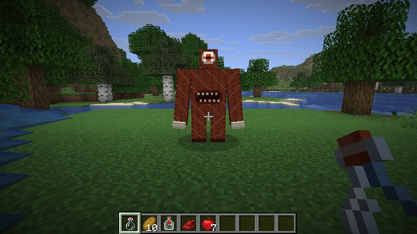
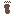
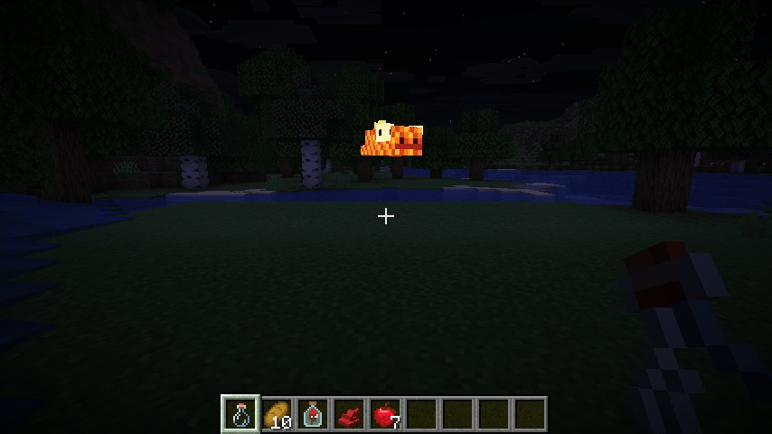
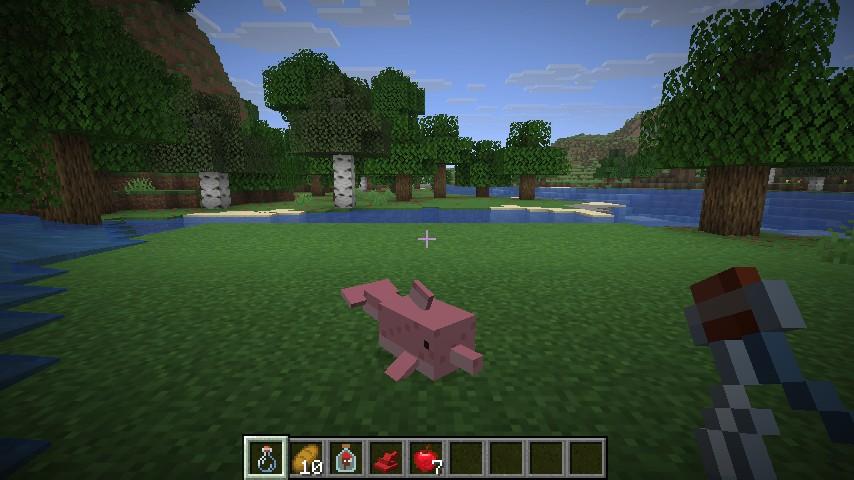
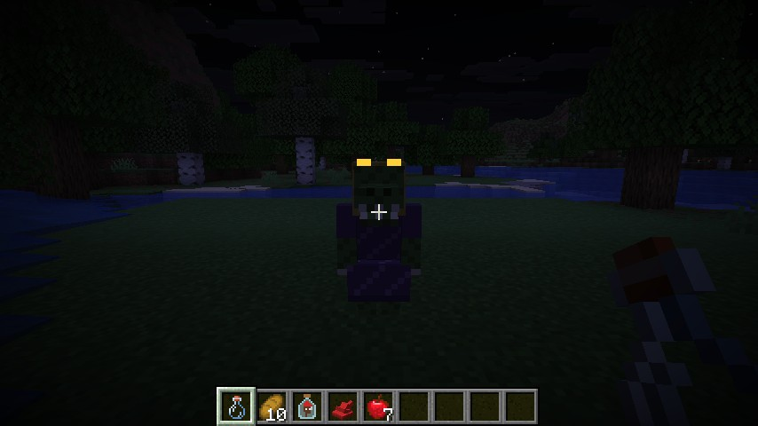
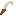

Folclore Brasileiro
Nove criaturas do folclore brasileiro no Minecraft, e cada uma segue as regras da sua lenda. Espada não mata o Saci. O Curupira castiga quem destrói a mata. E quem olha para a Iara acaba dentro do rio.
Nine creatures from Brazilian folklore come to Minecraft, and each one plays by the rules of its legend. You can't kill the Saci with a sword, the Curupira punishes whoever destroys the forest, and if you stare at the Iara she pulls you into the river.

InstalaçãoInstallation
- Instale o Fabric Loader para o Minecraft 26.3.
- Coloque o Fabric API e o Folclore Brasileiro na pasta
mods. - O mod precisa estar no cliente e no servidor. Ele funciona em mundos já existentes.
- Install the Fabric Loader for Minecraft 26.3.
- Put Fabric API and Folclore Brasileiro in your
modsfolder. - Required on both client and server. Works in existing worlds.
Saci
Um menino de uma perna só, de gorro vermelho e cachimbo, que anda dentro dos redemoinhos. Ele chega de mansinho, rouba um item do seu inventário e sai pulando e rindo com o item erguido na mão. De vez em quando para para gargalhar: é a sua chance.
A one-legged boy in a red cap with a clay pipe who travels inside whirlwinds. He sneaks up, steals an item from your inventory and hops away laughing, holding it up high. Now and then he stops to laugh at you: that's your chance.
Como vencerHow to beat him
- Nenhuma arma acerta o Saci: todo golpe só faz ele sumir no redemoinho e reaparecer a 8–16 blocos.
- Faça uma Peneira, mire nele (até 9 blocos) e clique com o botão direito. Ele devolve o que roubou e larga o Gorro do Saci.
- Tenha uma garrafa de vidro na mão secundária na hora da captura e ele fica preso: você ganha a Saci na Garrafa no lugar do gorro.
- Quem usa o Gorro do Saci nunca é roubado.
- No weapon can touch him: every blow just makes him vanish into the whirlwind and reappear 8–16 blocks away.
- Craft a Sieve, aim at him (up to 9 blocks) and right-click. He gives back what he stole and drops the Saci's Cap.
- Hold a glass bottle in your off hand when you catch him and he gets corked: you get the Saci in a Bottle instead of the cap.
- Whoever wears the Saci's Cap is never robbed.
PegadinhasPranks
Ele apaga tochas próximas com uma rajada de vento e "trança a crina" dos cavalos, que ficam lentos por um minuto.
He blows out nearby torches with a gust of wind and "braids the mane" of horses, slowing them for a minute.
| VidaHealth | 20 ❤ (imune a dano)(can't be hurt) |
| ApareceAppears | De dia até o anoitecer, a céu abertoDay to dusk, under open sky |
| ChanceChance | 1 em 20 por minuto1 in 20 per minute |
| DeixaDrops | Gorro do Saci ou Saci na GarrafaSaci's Cap or Saci in a Bottle |

CurupiraO guardião da mata, de cabelo de fogo e pés virados para trás. Ele não aparece por acaso: o mod conta o quanto cada jogador já tirou da floresta.
The guardian of the forest, with flaming hair and feet turned backwards. He doesn't show up by chance: the mod keeps count of how much each player has taken from the forest.
| AçãoAction | Pontos de desmatamentoForest debt |
|---|---|
| Quebrar um troncoBreak a log | +1 |
| Matar um animal selvagemKill a wild animal | +2 |
| Plantar uma mudaPlant a sapling | −3 |
| A cada 20 segundosEvery 20 seconds | −1 |
- 24 pontos: você ouve um assobio na mata e acha pegadas ao contrário perto de você.
- 48 pontos: o Curupira vem atrás de você. Ele assobia e dá náusea e escuridão (você "se perde"), e deixa pegadas viradas para o lado de onde veio.
- Muito ferido, ele some na mata e volta curado, duas vezes. Se você matar o Curupira, fica com fraqueza, lentidão e azar: a mata não esquece.
- Oferenda: clique nele com uma garrafa de mel. Ele perdoa tudo, deixa 4 mudas e vai embora.
- 24 points: you hear a whistle in the woods and find backward footprints around you.
- 48 points: the Curupira comes for you, whistling, making you dizzy and lost (nausea, darkness), leaving footprints that point the way he came.
- Badly hurt, he melts into the forest and returns healed, twice. Kill him and you carry weakness, slowness and bad luck: the forest doesn't forget.
- Offering: use a honey bottle on him. He forgives everything, leaves 4 saplings and goes away.
Os pontos ficam salvos no jogador (inclusive depois de morrer). Use /folclore desmatamento para ver os seus.
The points are saved with the player (even through death). Use /folclore desmatamento to see yours.
| VidaHealth | 40 ❤ |
| DanoDamage | 5 |
| ApareceAppears | Com 48+ pontos de desmatamentoAt 48+ forest debt |
| Acalma comCalmed by | Garrafa de melHoney bottle |
Boitatá
A grande cobra de fogo de olhos enormes que protege os campos. Ela desliza pelo ar à noite e engole as chamas: todo fogo num raio de 8 blocos se apaga quando ela passa.
The great serpent of fire with huge shining eyes that protects the fields. It glides through the night air and eats the flames: every fire within 8 blocks goes out as it passes.
- Acender fogo perto da mata (isqueiro ou carga de fogo a até 4 blocos de troncos ou folhas) chama o Boitatá, que persegue e incendeia quem pôs fogo.
- É imune a fogo e voa. Sozinha, vai embora ao amanhecer.
- Deixa o Olho de Boitatá.
- Lighting a fire near the forest (flint and steel or fire charge within 4 blocks of logs or leaves) calls the Boitatá, which hunts down and sets ablaze the arsonist.
- Fire-immune and flying. Leaves at sunrise when not hunting anyone.
- Drops the Boitatá Eye.

| VidaHealth | 30 ❤ |
| DanoDamage | 4 + fogo 5 sfire 5 s |
| ApareceAppears | À noite; ou quando alguém põe fogo na mataAt night; or when someone sets the forest on fire |
| DeixaDrops | Olho de BoitatáBoitatá Eye |
Mula sem CabeçaHeadless Mule
Uma mula sem cabeça, com fogo saindo do pescoço e ferraduras de ferro, que galopa pela noite relinchando e atropelando quem cruza o caminho. Aparece com o dobro de chance na noite de quinta para sexta.
A headless mule with fire pouring out of her neck and iron shoes, galloping through the night, screaming and trampling whoever crosses her path. Twice as likely on Thursday-to-Friday nights.
- Com menos da metade da vida, ela fica cansada (o fogo diminui e ela para de atacar).
- Cansada, clique nela com a mão vazia para arrancar o freio de ferro: o encanto se quebra e ela some.
- Se você demorar, ela recupera o fôlego e volta a atacar.
- O Freio da Mula deixa um cavalo, burro ou mula domado 30% mais rápido para sempre.
- Below half health she gets worn out (the fire dies down and she stops attacking).
- While she's worn out, use an empty hand on her to pull off the iron bridle: the curse breaks and she vanishes.
- Wait too long and she catches her breath and charges again.
- The Mule's Iron Bridle makes a tamed horse, donkey or mule 30% faster, permanently.
| VidaHealth | 40 ❤ |
| DanoDamage | 6 + fogo 3 sfire 3 s |
| ApareceAppears | À noite, a céu abertoAt night, open sky |
| DeixaDrops | Freio da MulaMule's Iron Bridle |
Iara
A mãe-d'água canta nos rios do anoitecer até o amanhecer. Quem olha para ela enquanto ela canta é puxado para a água, passo a passo, tonto com o encanto. E quem chega até ela dentro d'água é levado para o fundo.
The mother of the waters sings in the rivers from dusk to dawn. Whoever looks at her while she sings is drawn into the water, step by step, dizzy with the spell. Whoever reaches her in the water is pulled to the bottom.
- Desvie o olhar para quebrar o encanto. Ele só funciona enquanto você olha direto para ela.
- Ferida, ela mergulha e reaparece em outro ponto do rio.
- Deixa 1 ou 2 Escamas da Iara.
- Look away to break the spell: it only works while you look right at her.
- When hurt, she dives and resurfaces elsewhere in the river.
- Drops 1–2 Iara Scales.
| VidaHealth | 30 ❤ · armaduraarmor 4 |
| ApareceAppears | À noite, na água perto de vocêAt night, in water near you |
| DeixaDrops | Escama da IaraIara Scale |
Boto
De dia, um boto cor-de-rosa que brinca no rio e salva quem está se afogando: ele nada até você, te empurra para a superfície e te dá respiração aquática por 30 segundos.
By day, a pink river dolphin that plays in the river and saves drowning swimmers: it swims to you, pushes you up and gives you 30 seconds of water breathing.
À noite, ele sai do rio como o moço de terno e chapéu branco, que dança na margem e nunca tira o chapéu.
At night he walks out of the river as the young man in a white suit and white hat, dancing by the shore. He never takes off his hat.
- Dê um peixe para o moço e ele te dá um presente (de esmeralda e flores até, com sorte, um Coração do Mar).
- Bata nele e o chapéu cai, revelando quem ele é: ele vira boto e volta para o rio. O Chapéu do Boto fica com você.
- Give the young man a fish and he gives you a present (from emeralds and flowers to, if you're lucky, a Heart of the Sea).
- Hit him and his hat falls off, revealing who he is: he turns back into a dolphin and dives away. You keep the Boto's Hat.

| VidaHealth | 24 ❤ |
| ApareceAppears | Na água perto de você, dia ou noiteIn water near you, day or night |
| DeixaDrops | Chapéu do Boto; presentesBoto's Hat; presents |
Cuca
"Dorme, nenê, que a Cuca vem pegar..." A velha bruxa com cabeça de jacaré vem atrás de quem passou três noites sem dormir. Ela gargalha, joga poções (lentidão, fraqueza, veneno, dano) e lança um sono pesado: escuridão, lentidão e cansaço.
"Sleep, little one, or the Cuca will come..." The old alligator-headed witch comes for whoever hasn't slept for three nights. She cackles, throws potions (slowness, weakness, poison, harming) and casts a heavy sleep: darkness, slowness and fatigue.
- Vá dormir: assim que você descansa, ela desiste e vai embora resmungando.
- Se for derrotada, deixa 2 poções boas (cura, regeneração, velocidade, visão noturna ou força).
- Go to bed: as soon as you rest, she gives up and leaves, grumbling.
- If defeated, she drops 2 good potions (healing, regeneration, swiftness, night vision or strength).

| VidaHealth | 40 ❤ · armaduraarmor 4 |
| AtaqueAttack | Poções arremessadasThrown potions |
| ApareceAppears | À noite, para quem não dorme há 3 noitesAt night, after 3 nights without sleep |
Lobisomem
Nas noites de lua cheia, um homem vira lobo e ronda as encruzilhadas. Ele é rápido, salta sobre a presa e caça jogadores e animais. Dá para ouvir o uivo de longe.
On full-moon nights, a man turns into a wolf and roams the crossroads. He is fast, leaps at his prey and hunts players and animals alike. You can hear the howl from afar.
- A cura antiga é ferir até sangrar: com menos de 25% da vida, o encanto se quebra.
- No lugar dele aparece um aldeão com nome ("Seu Lobato", "Zé do Mato"...) que não lembra de nada.
- Ao amanhecer, ele também volta a ser homem.
- The old cure is to wound him until he bleeds: below 25% health the curse breaks.
- In his place stands a named villager ("Seu Lobato", "Zé do Mato"...) who remembers nothing.
- He also turns back into a man at sunrise.
| VidaHealth | 50 ❤ · armaduraarmor 6 |
| DanoDamage | 7 |
| ApareceAppears | Noites de lua cheia, a céu abertoFull-moon nights, open sky |

MapinguariO gigante da Amazônia: coberto de pelo avermelhado, com um olho só e uma boca enorme no meio da barriga. O fedor é tão forte que, perto dele, você fica enjoado e envenenado.
The giant of the Amazon: covered in reddish fur, with a single eye and a huge mouth in the middle of its belly. It smells so bad that standing near it makes you sick and poisoned.
- O couro dele aguenta quase tudo: golpes pelas costas e pelos lados causam só 20% do dano.
- Ataque de frente, na boca da barriga: lá o dano é de 150%.
- Vive na selva e aparece de dia. Deixa a Garra do Mapinguari, couro e muita experiência.
- Its hide shrugs off almost everything: hits from behind or the sides deal only 20% damage.
- Strike from the front, right in the belly mouth: 150% damage.
- Lives in jungles, by day. Drops the Mapinguari Claw, leather and lots of experience.
| VidaHealth | 120 ❤ |
| DanoDamage | 10 |
| ApareceAppears | De dia, na selvaBy day, in jungles |
| DeixaDrops | Garra do Mapinguari, couro, 40 XPMapinguari Claw, leather, 40 XP |
ItensItems
Receita: PeneiraRecipe: Sieve
Todos os itensAll items
A única coisa que pega o Saci. Mire e clique (até 9 blocos). 16 usos.
The only thing that catches the Saci. Aim and right-click (up to 9 blocks). 16 uses.
Na cabeça: +20% de velocidade, pulo maior, e nenhum Saci te rouba.
Worn: +20% speed, higher jumps, and no Saci will rob you.
5 favores: um redemoinho traz todos os itens e XP soltos num raio de 16 blocos até você (espera de 20 s). No último favor ele estoura a rolha e foge!
5 favours: a whirlwind brings every loose item and XP orb within 16 blocks to you (20 s cooldown). After the last one he pops the cork and escapes!
Comestível: visão noturna por 3 min e resistência a fogo por 1 min.
Edible: night vision for 3 min and fire resistance for 1 min.
Use num cavalo, burro ou mula domado: +30% de velocidade para sempre (uma vez por animal).
Use on a tamed horse, donkey or mule: +30% speed, permanently (once per animal).
Comestível: respiração aquática e graça do golfinho por 3 min.
Edible: water breathing and dolphin's grace for 3 min.
Na cabeça: nada muito mais rápido e segura o fôlego por mais tempo.
Worn: swim much faster and hold your breath longer.
Arma pesada: muito dano, ataque lento.
A heavy weapon: big damage, slow swing.
Todas as criaturas têm ovo gerador na aba criativa "Folclore Brasileiro".
Every creature has a spawn egg in the "Brazilian Folklore" creative tab.
Quando aparecemWhen they appear
Uma vez por minuto, para cada jogador no modo sobrevivência no Overworld, cada criatura cujas condições são atendidas tem uma pequena chance de chegar. Chega no máximo uma criatura por minuto, e nunca duas do mesmo tipo a menos de 64 blocos uma da outra. As criaturas da noite vão embora ao amanhecer, e todas vão embora depois de 2 minutos sem ninguém por perto.
Once a minute, for each survival player in the Overworld, every creature whose conditions are met has a small chance to arrive. At most one per minute, and never two of the same kind within 64 blocks. Night creatures leave at sunrise; all of them leave after 2 minutes with nobody around.
| CriaturaCreature | CondiçãoCondition | Chance padrãoDefault chance |
|---|---|---|
| Saci | Dia até o anoitecer, céu abertoDay to dusk, open sky | 1/20 |
| Curupira | 48+ pontos de desmatamento48+ forest debt | semprealways |
| Boitatá | Noite, céu aberto · ou fogo perto da mataNight, open sky · or fire near the forest | 1/25 · sempre1/25 · always |
| Mula sem CabeçaHeadless Mule | Noite, céu aberto (dobro de quinta para sexta)Night, open sky (double on Thursday→Friday) | 1/30 |
| Iara | Noite, água por pertoNight, water nearby | 1/12 |
| Boto | Água por pertoWater nearby | 1/8 |
| Cuca | Noite, 3+ noites sem dormirNight, 3+ nights without sleep | 1/3 |
| Lobisomem | Noite de lua cheia, céu abertoFull-moon night, open sky | 1/5 |
| Mapinguari | Dia, na selvaDay, in a jungle | 1/20 |
ComandosCommands
Comandos de operador, ótimos para gravar vídeos. Criaturas chamadas por comando ou por ovo não vão embora quando amanhece.
Operator commands, great for recording videos. Creatures called by command or spawn egg don't leave at sunrise.
| ComandoCommand | O que fazWhat it does |
|---|---|
/folclore saci | Traz um Saci num redemoinhoBrings a Saci in a whirlwind |
/folclore curupira | Traz o Curupira (e põe seu desmatamento na fúria)Brings the Curupira (and sets your forest debt to fury) |
/folclore boitata|mula|cuca|lobisomem|mapinguari | Traz a criatura perto de vocêBrings that creature near you |
/folclore iara|boto | Traz a criatura na água mais próximaBrings that creature into the nearest water |
/folclore desmatamento [valor] | Mostra ou define seus pontos de desmatamento (0 a 120)Shows or sets your forest debt (0–120) |
ConfiguraçãoConfiguration
O arquivo config/folclore.json é criado na primeira vez que o jogo abre. As chances são "1 em N por minuto". 0 desliga as aparições naturais daquela criatura (o comando e o ovo continuam funcionando).
The file config/folclore.json is created on first launch. Chances are "1 in N per minute"; 0 turns off that creature's natural appearances (commands and eggs still work).
{
"saciAtivo": true,
"saciChance": 20,
"curupiraAtivo": true,
"curupiraAviso": 24,
"curupiraFuria": 48,
"boitataChance": 25,
"mulaChance": 30,
"iaraChance": 12,
"botoChance": 8,
"cucaChance": 3,
"lobisomemChance": 5,
"mapinguariChance": 20,
"boitataContraQueimada": true
}
FAQ
O Saci roubou meu item e sumiu. Perdi?The Saci stole my item and vanished. Is it gone?
Não. Enquanto ele estiver com o item, ele não some do mundo: fica fugindo por perto. Faça uma peneira e vá atrás dele. Quando ele parar para rir, é a hora.
No. While he carries your item he never despawns: he keeps fleeing nearby. Craft a sieve and go after him. When he stops to laugh, that's your moment.
Posso usar em servidor e em modpack?Can I use it on servers and in modpacks?
Pode, desde que baixe das páginas oficiais (Modrinth ou CurseForge). Vídeos e lives, inclusive monetizados, também estão liberados.
Yes, as long as it's downloaded from the official pages (Modrinth or CurseForge). Videos and streams, monetised too, are welcome.
Achei um bug / tenho uma ideiaI found a bug / have an idea
Abra uma issue no GitHub ou comente na página do mod.
Open an issue on GitHub or comment on the mod page.